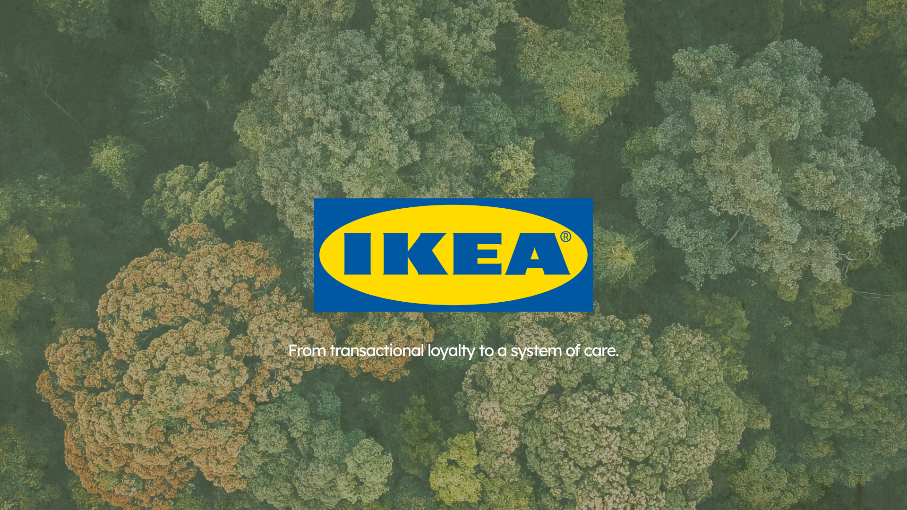
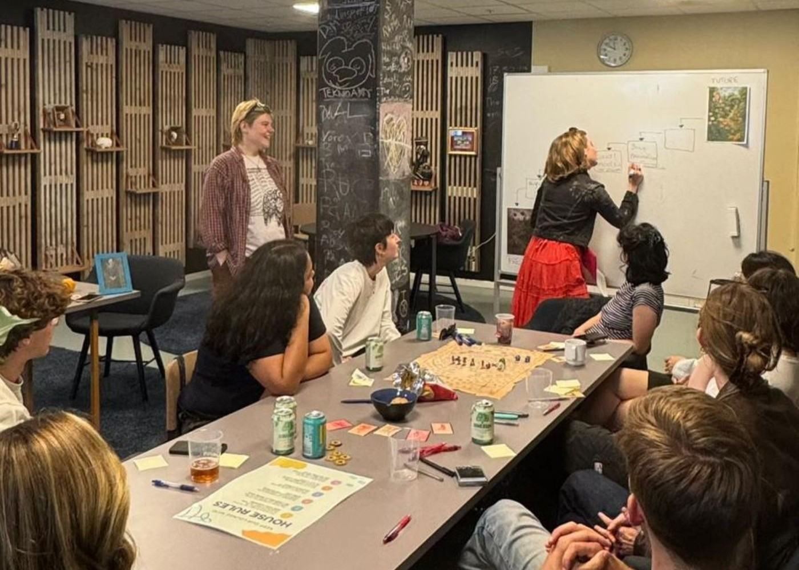
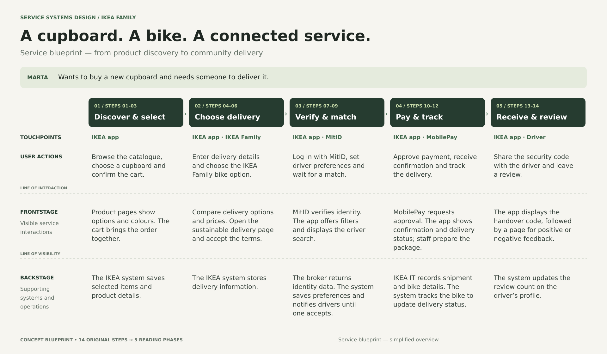
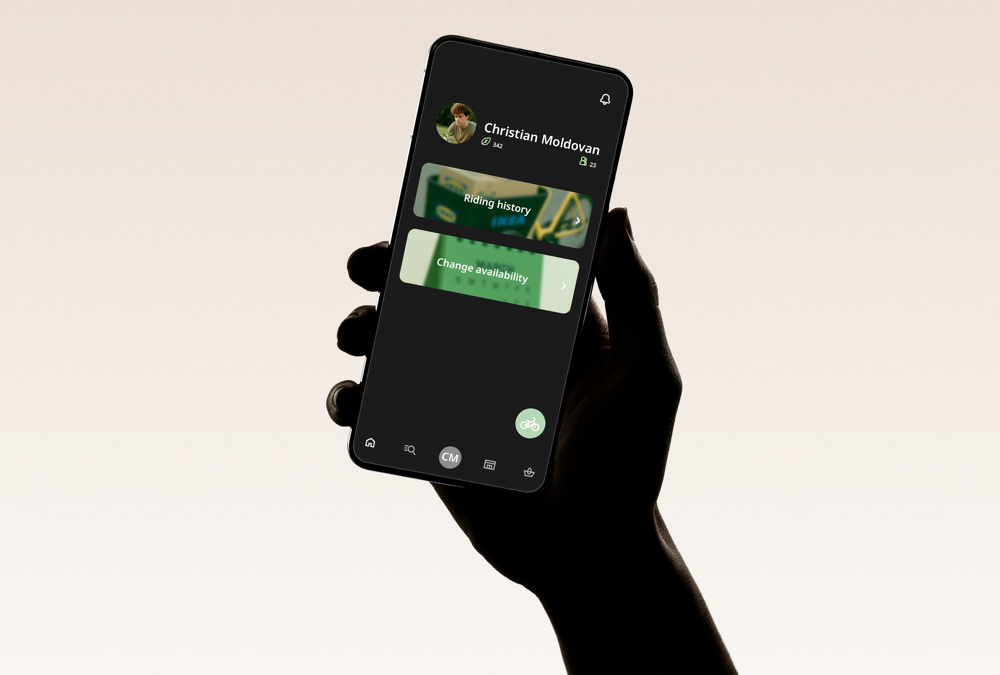
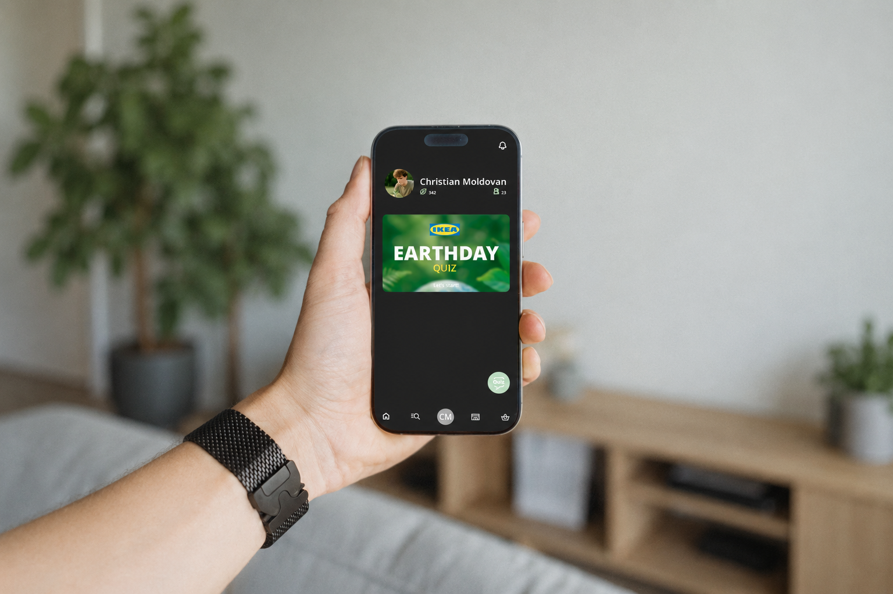
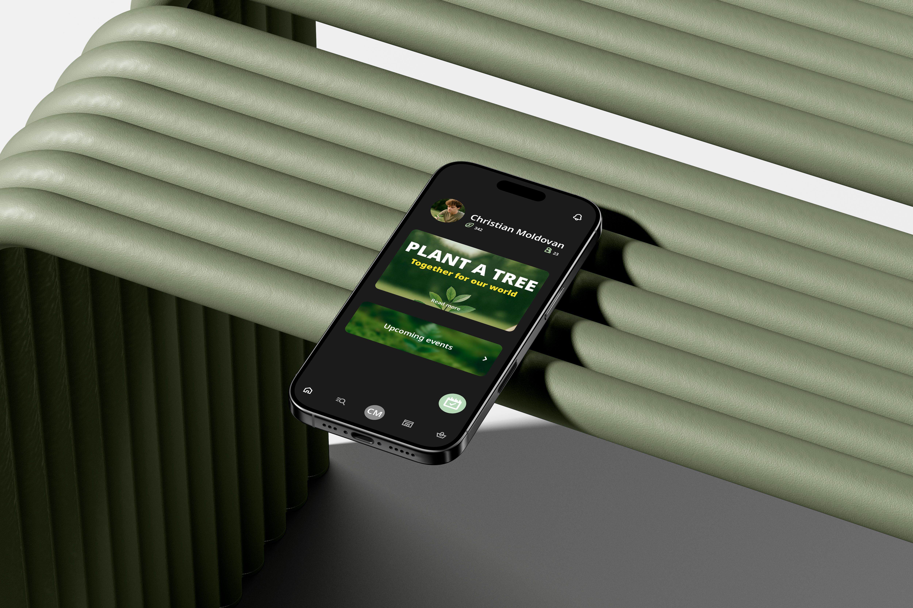

Service Systems Design / 01
IKEA
Rethinking loyalty
A life-centered loyalty system connecting people, communities, and nature.

Problem
Loyalty programs are primarily transactional, driving engagement through rewards without creating meaningful social or environmental impact.
Solution
A life-centered loyalty system that encourages sustainable behaviors, fostering connections between people, communities, and nature.
Project context
IKEA’s loyalty program is widely successful in driving engagement, yet it remains largely transactional. This project explores how loyalty can evolve beyond rewards, becoming a system that creates value for people, communities, and the environment.

The project followed a systemic design approach, starting with research on existing loyalty models and user behaviors. Insights were developed through interviews, field research, and ecosystem mapping. These findings informed a co-creation phase, where ideas were explored and validated through workshops and iterative prototyping. The final outcome translates these insights into a cohesive service system designed to activate long-term engagement and collective impact.
- Year
- 2025
- Tools
- Service Systems Design tools · Flourish · Google Analytics · Figma
- Category
- Service Systems Design




See also

Sidestream Platform